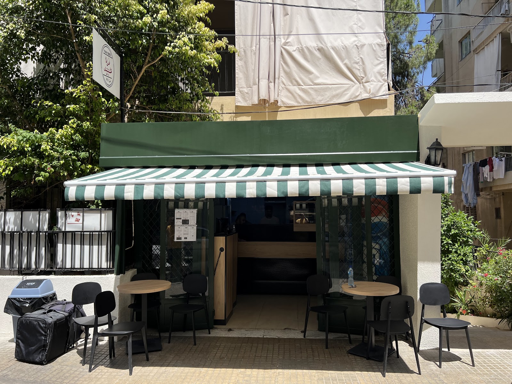
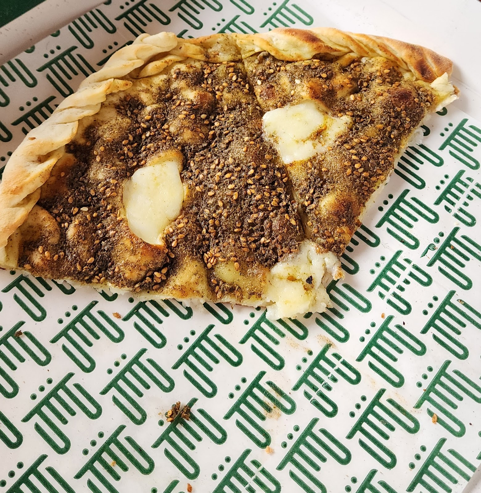
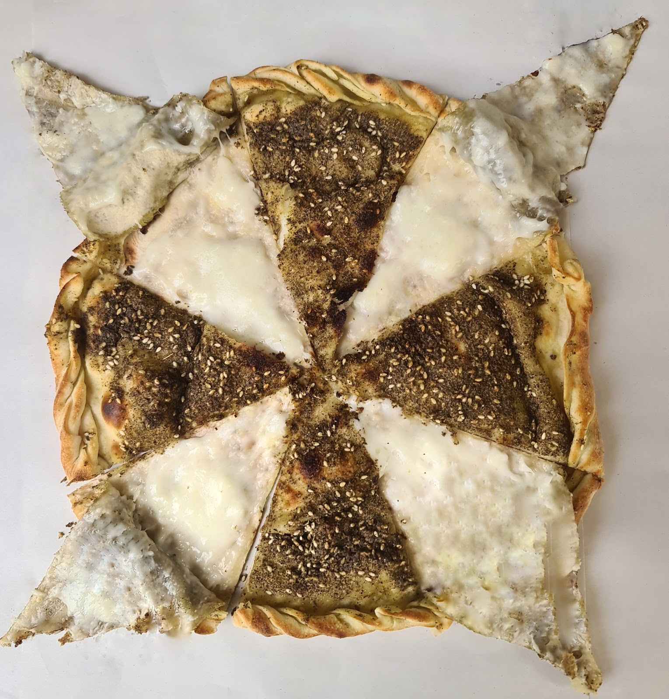
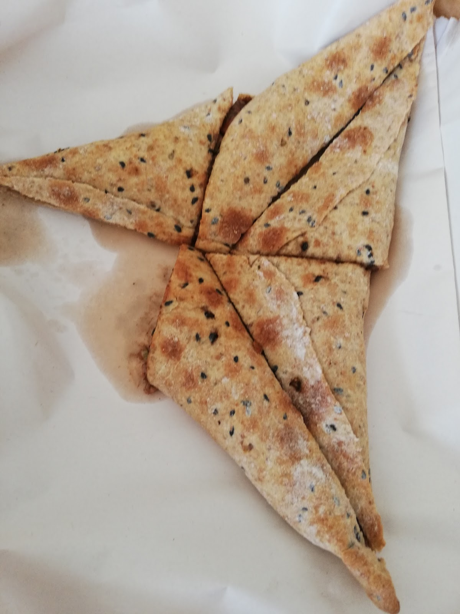
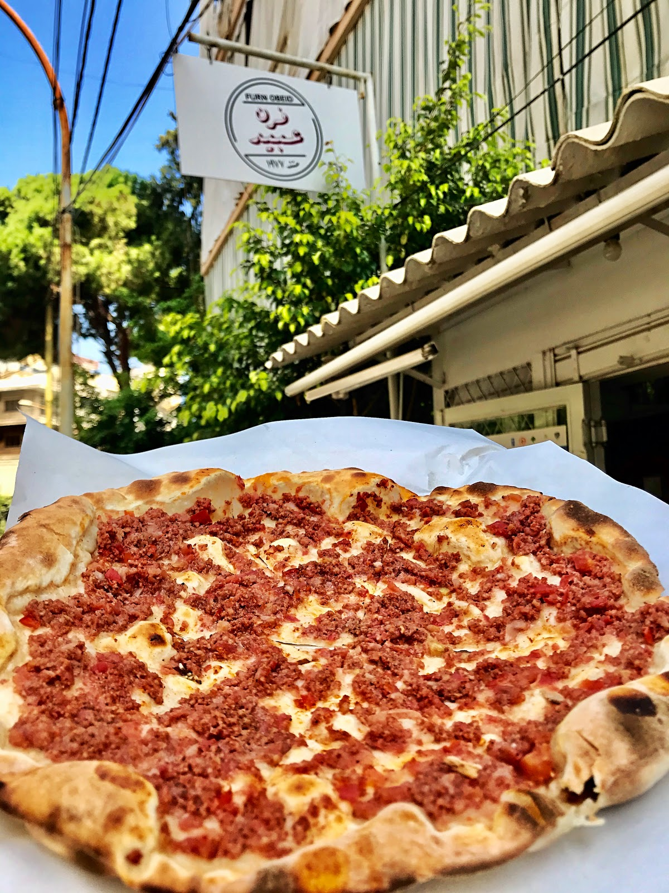
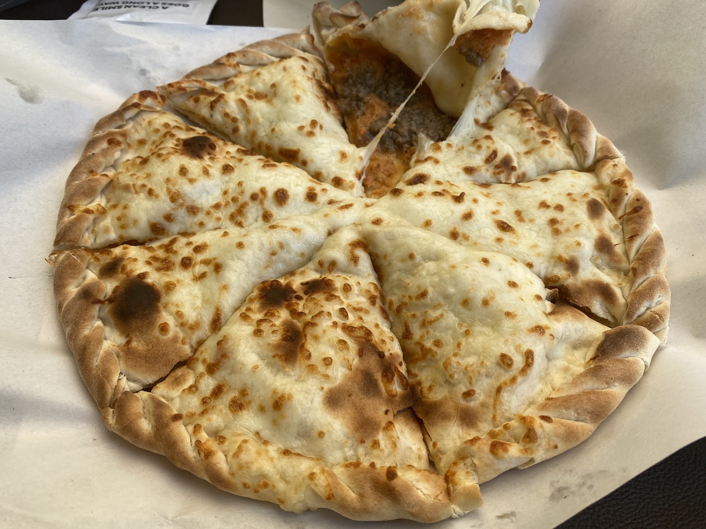

Open at 7:30, out of dough when it is over بيفتح 7:30، وبيخلص لما تخلص العجينة

4.6 ★

TWO LAYERS, ONE BAKE





Incredible! I've been in Beirut since June and Im still here for 2 more weeks, I must admit this is the first time I had a tasty manoushe since I came!Stephanie Khattar
upadted review#2: I had the chance to try their selection of dough over breakfast today .Melted Butter
5 star is not enough for this great Furn. It's Perfect. Excellent dough ingredients. All the flavors are excellent. The zaatar , cheese and keshk.Sarah Houri
| 7:30 AM–10 PM | |
| 7:30 AM–10 PM | |
| 7:30 AM–10 PM | |
| 7:30 AM–10 PM | |
| 7:30 AM–10 PM | |
| 7:30 AM–10 PM | |
| 7:30 AM–10 PM |
Beirut, Lebanon
+961 1 481 415